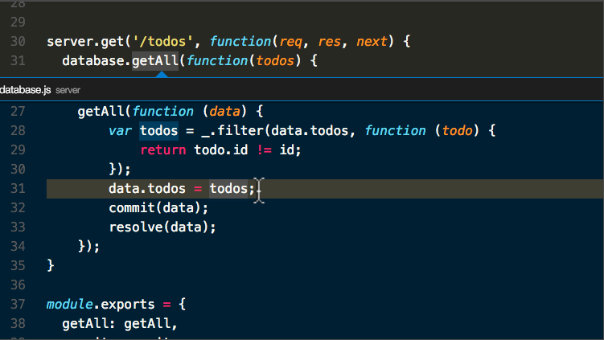
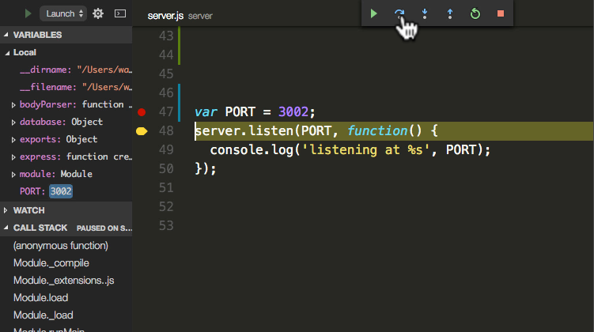

-

Auto-complétion
Code plus intelligent avec IntelliSense - Compléments pour les variables, les méthodes et les modules importés.
-

Montage rapide et puissant
Linting, édition multi-curseur, indications de paramètres et autres fonctionnalités d'édition puissantes.
-

Navigation dans le code et refactoring
Parcourez votre code source rapidement à l’aide de Peek et naviguez jusqu’à la définition.
-

Contrôle de source intégré au produit
Accélérez votre cycle de publication avec le support SCM dans votre éditeur, y compris l'intégration riche de Git.
Survole le carré ci-dessous
Visual Studio Code est devenu un éditeur de code très populaire pour les développeurs Angular, en particulier ceux qui utilisent la CLI Angular. Des fonctionnalités telles que la coloration syntaxique et la saisie semi-automatique, la possibilité de déboguer le code directement dans l'éditeur, les commandes Git intégrées et la prise en charge des extensions font de VSCode l'un des éditeurs de code les plus populaires.

Rencontrez IntelliSense.
Allez au-delà de la coloration syntaxique et de la saisie semi-automatique avec IntelliSense, qui fournit des compléments intelligents basés sur les types de variable, les définitions de fonction et les modules importés.

Le débogage des instructions d'impression appartient au passé.
Déboguer le code directement depuis l'éditeur. Lancez ou attachez à vos applications en cours d'exécution et déboguez avec des points d'arrêt, des piles d'appels et une console interactive.

Commandes Git intégrées.
Travailler avec Git et d’autres fournisseurs SCM n’a jamais été aussi simple. Passez en revue les diffs, les fichiers de stage et effectuez des commits directement à partir de l'éditeur. Push and pull à partir de n'importe quel service SCM hébergé.

Extensible et personnalisable.
Vous voulez encore plus de fonctionnalités? Installez des extensions pour ajouter de nouveaux langages, thèmes, débogueurs et vous connecter à des services supplémentaires. Les extensions sont exécutées dans des processus distincts, afin de ne pas ralentir votre éditeur. En savoir plus sur les extensions.

Déployer avec confiance et facilité
Avec Microsoft Azure, vous pouvez déployer et héberger vos sites React, Angular, Vue, Node, Python (et plus encore!), Stocker et interroger des données relationnelles et documentaires, et évoluer avec une informatique sans serveur, le tout avec facilité, à partir de VS Code.